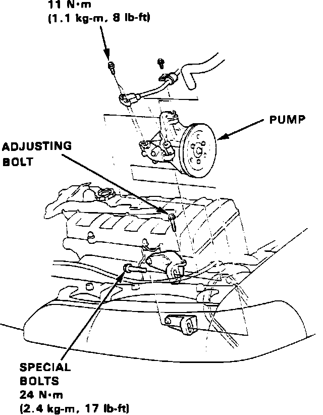

Power Steering Pump: Service and Repair
Fig. 33 Power Steering Pump Replacement:

1. Disconnect steering gear reservoir return hose and place end in suitable container.
2. Start engine and allow to idle, turn steering wheel from lock to lock several times, when fluid stops running out of hose, stop engine.
3. Disconnect pump inlet and outlet hoses and plug, Fig. 33.
4. Remove power steering belt.
5. Remove power steering pump.
6. Reverse procedure to install.